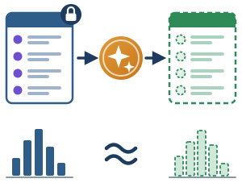

Presìdi di protezione dei dati · 2 di 3

Dati reali → modello generativo → dati fittizi con la stessa struttura statistica
Inquadramento normativo
D.M. 166/2025, par. 3.3 e 4.3
«Dati artificiali generati da dati originali e da un modello addestrato per riprodurre le caratteristiche e la struttura dei dati originali».
- Richiami: report TechSonar dell’EDPS e Data Governance Act (Reg. UE 2022/868), Considerando 7.
- L. 132/2025, art. 8, cc. 3 e 4: ne incentiva l’uso per ricerca, sperimentazione e addestramento, così da minimizzare i dati reali.
Esempio a scuola
Riconoscere presto i segnali di rischio di abbandono scolastico
- Docenti e animatori digitali vogliono addestrare un algoritmo, ma non usano lo storico reale di voti, assenze e schede personali.
- La scuola genera un dataset sintetico: fittizio, ma statisticamente coerente con la popolazione scolastica.
- L’algoritmo è sviluppato e testato su profili simulati, senza esporre i dati personali degli studenti.